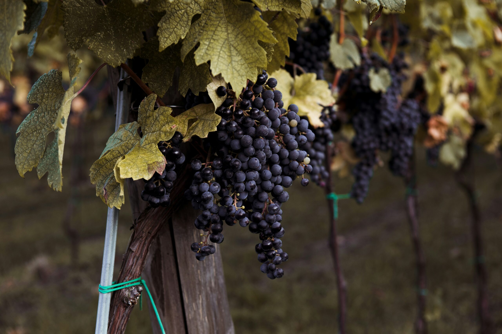
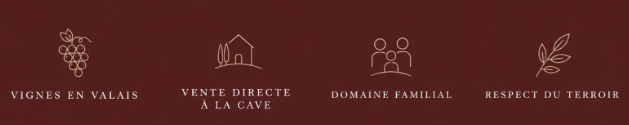

01
Terroir valaisan
Des vignes ancrées dans les sols et le microclimat exceptionnel du Valais, entre Alpes et soleil.
Valais — Vins de terroir
Jean-Michel et Victor Cleusix cultivent et vinifient avec exigence et respect du terroir, dans les vignes du Valais.



Notre histoire
Jean-Michel Cleusix, passionné de viticulture depuis toujours, a transmis son savoir-faire et son amour de la terre à son fils Victor.
Ensemble, ils cultivent et vinifient avec exigence et respect du terroir. Chaque vendange, chaque barrique est le fruit de cette complicité entre générations.
« C’est ce lien unique, entre père et fils, qui donne à nos vins leur authenticité et leur âme. »
Jean-Michel & Victor Cleusix
La sélection

Cépage typiquement valaisan aux arômes de fruits rouges sauvages et d’épices.
CHF 15.–

Élaboré depuis des vignes âgées, ce Pinot dévoile structure et élégance.
CHF 15.–

Cépage italien épanoui sous le soleil du Valais, aux tanins soyeux et à la belle longueur.
CHF 20.–
Prochainement disponible. Contactez-nous pour être informé.
—


Des vignes ancrées dans les sols et le microclimat exceptionnel du Valais, entre Alpes et soleil.
Chaque étape, de la vendange à la mise en bouteille, est réalisée avec soin et passion par la famille.
Venez nous rencontrer directement pour découvrir nos vins et partager notre passion du terroir.
Nous trouver
Nous accueillons volontiers les amateurs de vin à la cave. N’hésitez pas à nous contacter pour prendre rendez-vous.
Contact